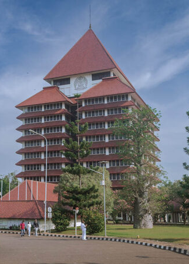
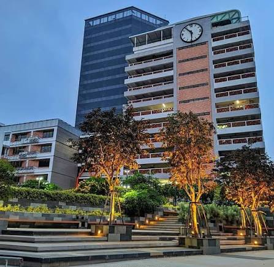
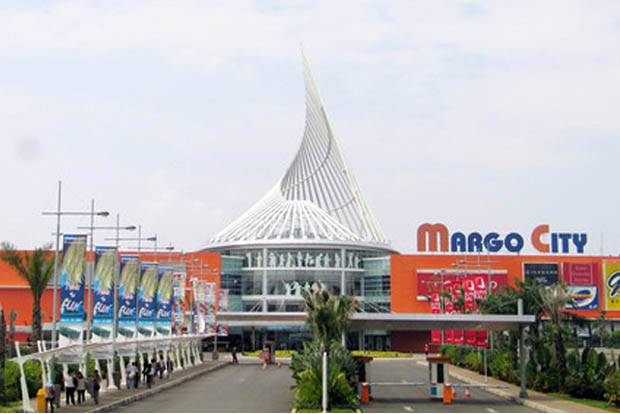
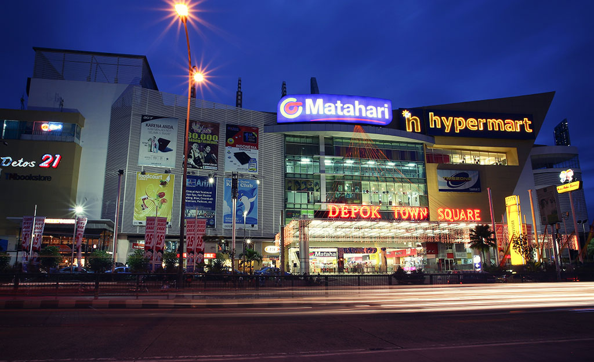
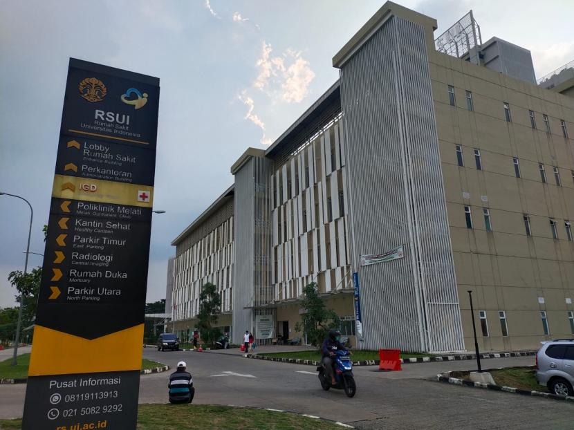
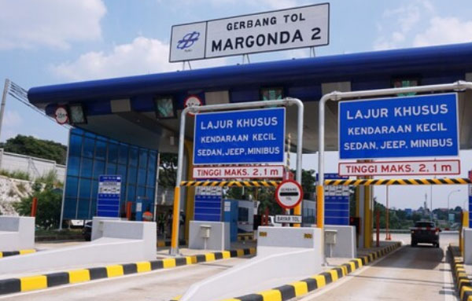
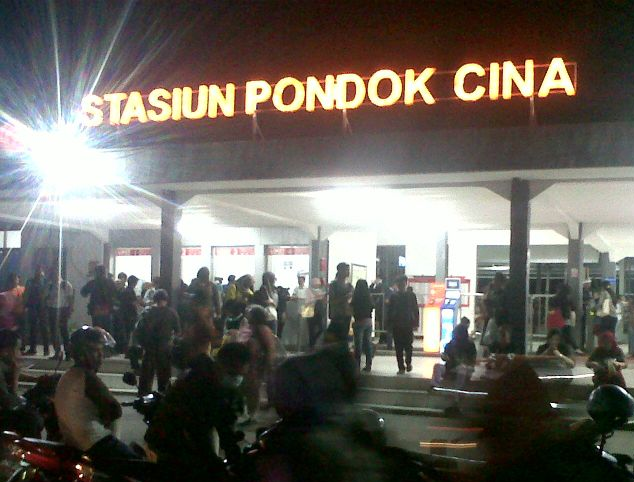

Atlanta Residence • Margonda, Depok
± 5 menit (Sangat dekat, bertetangga langsung via Jalan Margonda Raya)
± 3-5 menit (Akses cepat menuju berbagai gedung kampus Gunadarma Margonda)
± 5 menit (Akses commuter line langsung ke Jakarta/Bogor)
± 7 menit (Alternatif stasiun KRL terdekat di pusat bisnis Margonda)
± 8 menit (Pusat perbelanjaan terbesar, kuliner, bioskop, dan rekreasi keluarga)
± 10 menit (Akses Tol Cinere-Jagorawi untuk koneksi cepat ke Jakarta, Bogor, dan Bandara)

Universitas Indonesia
Kampus Gunadarma Depok
Mall Margocity
Depok Town Square
Rumah Sakit UI
Tol Cijago
Stasiun KRL Pondok Cina